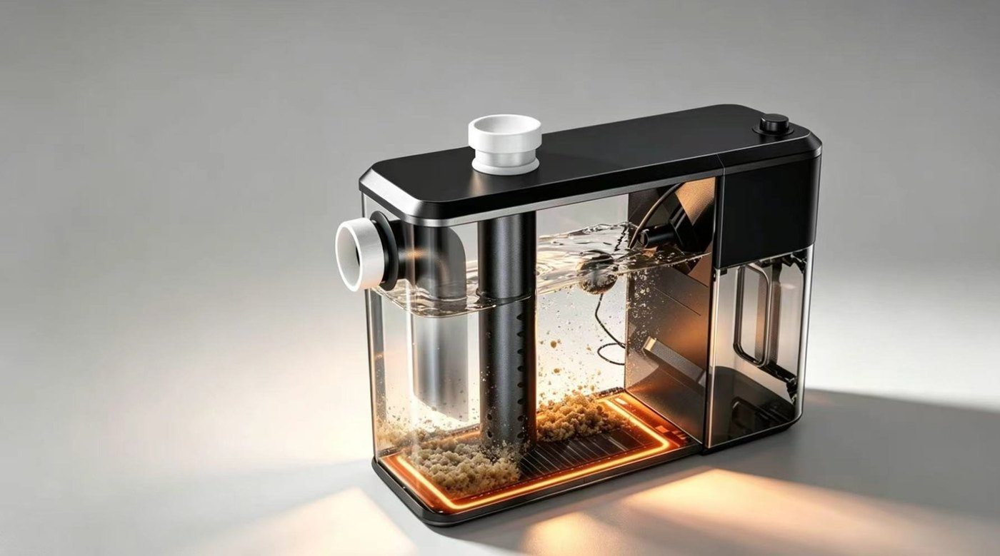

PROJECT 01
Designed for Diversity
东航客运大飞机座椅
一套能覆盖多种体型乘客与多类出行场景的座椅方案 —— 回应静脉曲张乘客的舒展、带婴家长的行李收纳、高大旅客的座椅调节，以及年长者的通行难题。
进入项目
PROJECT 02
Built for the Future
东风日产 · 智能座舱 情绪沙盘
用「情绪」而不是「功能」重新组织人与车的关系。自动驾驶把双手从方向盘里解放出来，却让它「无处安放」—— 一套以触觉反馈为中心的座舱交互平台。
进入项目
PROJECT 03
Designed for Every Drop
智能水油分离器
在同质化的品类里，找一个能站得住的差异化机会点。集结构创新、智能感应、防堵防漏与人居适配于一体，重塑家庭厨房的油污处理体验。
进入项目